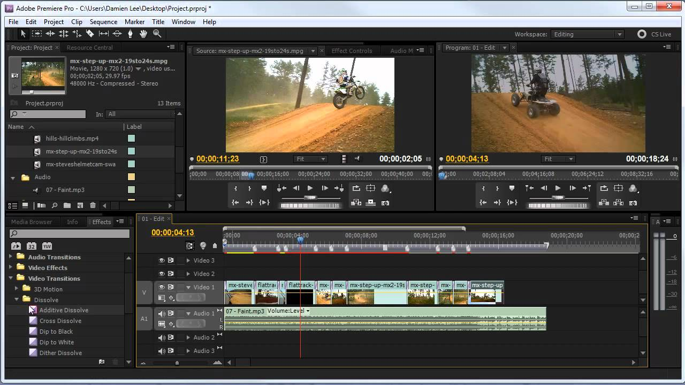
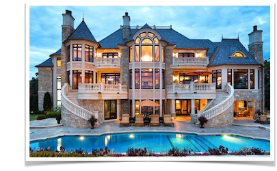
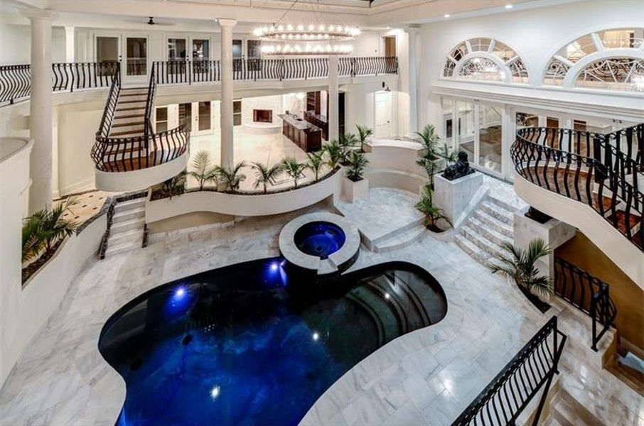
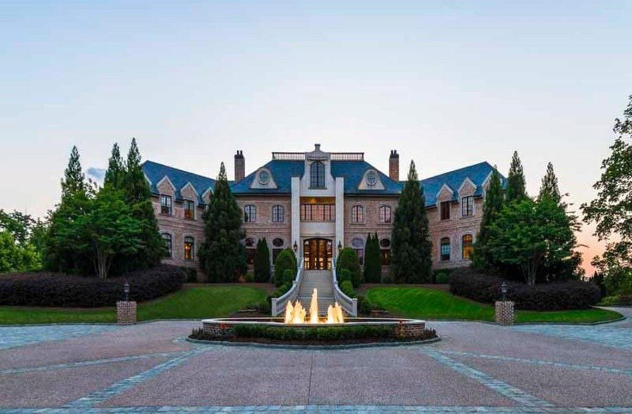

Music
I have a huge passion for music. When I had a lot of spare time, I would sit in front of a computer screen all day listening to different samples of old music, and all various types of instruments that I thought would sound good in some of my productions. Overall its the creativity and freedom of it!
Video Editing
They pretty much coincide with each other. I use adobe cs6 master collection for editing videos, there are some pretty wild things you can do in there with extra plug-ins and stuff.

Mansions
For some reason I have always been fascinated with huge houses. I would search for properties in Atlanta, and then drive to go see them or at least the ones that weren't gated. I like the archiectectual structures of houses from the interior to the exterior, fram-work, and even the landscaping.


